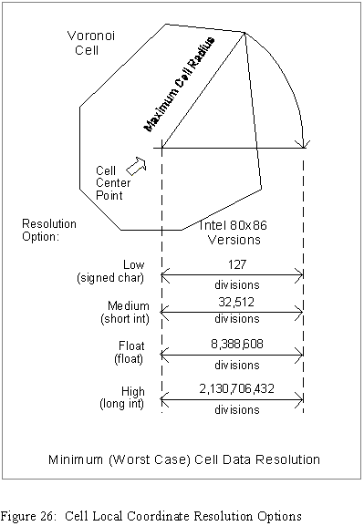
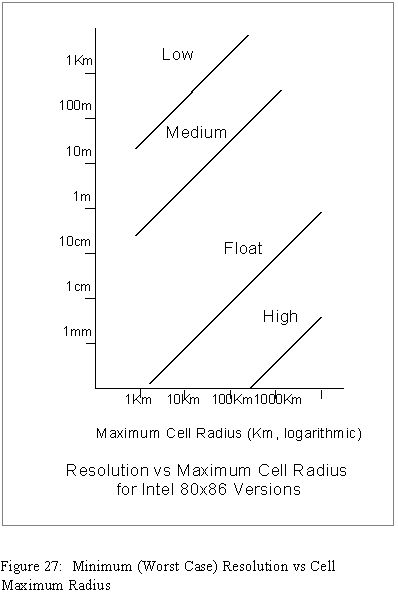

The purpose of this chapter is to introduce just a few advanced subjects relating to the use of the Hipparchus Library. You may want to defer concentrated study of this chapter until you have completed one or more pilot implementations of your application. At a minimum however you should skim the material to see what's covered.
Hipparchus makes no specific demands on what type of DBMS you must use. You can use a relational, network, hierarchical or object-oriented database management system, or no DBMS at all. The choice of DBMS is strictly yours.
If your data is not too voluminous or the speed of its retrieval is not an issue, then you might opt to maintain maximum flexibility by using a relational database manager. By contrast, if your application uses a lot of static location data or has stringent interactive processing requirements, then you might consider the use of a network or hierarchical database manager.
However, for many applications, you may choose to use no DBMS at all, relying entirely on the C/C++ stream I/O run-time facilities of your operating system. The sample programs abound with examples of this approach.
You may choose to store location information in external storage using formats different from those needed for direct memory manipulation by the Hipparchus engine. Again, the choice of external storage format is yours.
If your externally-stored location information is used frequently in other systems or is often updated externally, then you will probably choose a global coordinate format. This could take the form of sexagesimal latitudes and longitudes in data type char string format, radian latitudes and longitudes in data type double format, or direction cosines in data type double format.
If maximum resolution is not an issue, then you might opt to truncate any of these forms. For example, you might record sexagesimal angles to the nearest tenth of a degree. Or you might record radian angles using float rather than double format. Or you might record direction cosines using any one of the float, long int or short int formats (direction cosines being normalized).
On the other hand, if your data is used mainly by the one application, or is relatively static, you will likely choose an external format that retains the Hipparchus cell local coordinate form, the cell differential coordinates. You might use any one of the formats available depending on the precision requirements of the application. In any of these formats, your data may be retrieved faster and your memory objects constructed much faster too. But if you later densified or re-specified the associated Voronoi cell structure, you would have to go through some or all of the external data and update the cell local coordinates. If you store your external data in cell local coordinate form, then you must arrange to store its associated Voronoi cell structure definition along with it, somewhere.
Your application can add additional intelligence about your data in order to reduce its storage requirements. For example, let us assume you have two parcels of land (objects A and B) that have a common boundary. You could economize on the amount of data being stored if your application recognized the common boundary. In readying object A for analysis by Hipparchus, the common boundary line could be retrieved as part of a region definition. Then to ready object B, you could retrieve the same data (in reverse order) as part of the region definition for object B. (Note that the legal descriptions of such parcels of land often stand on their own and may need to be modeled independently.)
As described elsewhere, the objects of interest to Hipparchus are spatial objects. They represent things, conditions or events on or near the surface of the Earth. Using Hipparchus, the spatial relationships among objects can be determined and new objects derived.
Hipparchus performs all of its primary functions in the (virtual) main memory of the computer (RAM) using the data structures and canonical forms described in the Hipparchus Library Reference Manual and detailed by the accompanying C/C++ language header files.
You are therefore free to orchestrate the construction, indexing and disposition of these well-defined memory-based objects using whatever strategy best serves the application.
Any spatial object must necessarily consist of the elemental point or vertex locations that define the points, lines or rings that make up the object set. We have already mentioned that you can represent these locations using cell local or global coordinates in a number of different formats. We need to discuss now the various ways you might manage the collections of point or vertex locations that define the application objects.
For prototypes and simple applications, you can keep it simple and use the ASCII object management facilities of the Galileo program described in Chapter 10 - Sample Applications. These facilities can store and retrieve objects as named ASCII flat files.
For more data intensive applications, you will probably want to investigate the alternatives for organizing and managing your point or vertex location data.
First, you need to decide how to link the location information with all of the other attributes referenced by the application. When the objects are merely single-point sets, this is no more complicated than adding the location attribute to the table or record layout that specifies the other attributes.
If your data has just one attribute (such as elevation) related to each point or vertex of a set, then you can associate that data directly with the Hipparchus cell local coordinates in the memory model. In such cases, you will likely want to keep the extra attribute closely associated with the coordinates in external storage too.
In the more general case where your objects are multi-point sets, lines or regions, having other attributes that relate to the set as a whole, a separate table can hold the non-location attributes and a simple cross-reference can be made to the object location definition tables. You will likely use separate tables to define point set objects, line set objects and region (ring set) objects.
Most developers will want to make maximum use of Hipparchus' superior spatial indexing. As described elsewhere, Hipparchus' spatial indexing power is derived from properties of the Voronoi cell structure.
In the first instance, the cell structure is used internally to determine which cell contains a point or a line or ring vertex, given its global coordinates. Perhaps more importantly, it can be used to access efficiently any data from external storage.
In the simplest scheme, you can sort and store your external point or vertex data by its containing cell identifiers. Then when you want to access data related to that point or vertex you can look up that cell's physical storage location (using your DBMS index) and go directly to the cluster of all your data relating to that cell.
More elaborate schemes can permit objects or partial objects to be dealt with in memory on a restricted geographic basis, with reference being made to external storage only when the area of interest shifts. Hipparchus provides the means to discover what Voronoi cells are occupied, traversed or contained by an object, and vice versa. This means that you can find all the cells for a given object or all the objects for a given cell, or both. You can also find all the cells containing data for a specific graphics window. This very powerful capability gives you considerable latitude in organizing your data efficiently.
You know that Hipparchus keeps track internally of the close relationship between a cell structure and the objects that you have created in memory.
For every object, Hipparchus knows what cells contain the points or vertices that describe the geographic position of that object. For line sets and regions, Hipparchus also knows if cells were "overflown" by line or ring segments. For regions, Hipparchus also knows what cells are entirely contained within the object.
Conversely, for any cell, Hipparchus can easily determine what objects are inside it, have segments in it, overfly it, or completely contain it.
Hipparchus organizes and works with this information using "cellstrings". A cellstring is simply a memory list of cell identifiers. Hipparchus creates cellstrings in memory that are usually allocated from your system heap. It creates, uses and destroys them in memory in the normal course of creating, manipulating and destroying your geographic objects. In addition, Hipparchus maintains cellstrings in conjunction with any graphic windows that you might define.
If you intend to develop some of the advanced concepts of database organization or graphics rendering, you will want to study these functions and structures in some detail. The functions that work with cellstrings are described in sections h1, h6, h7 and h9 of the Hipparchus Library Reference Manual. Cellstring structures are defined by the header file hipparch.h.
The order in which cells are numbered can affect the performance of some applications. These would be applications having specific user patterns of interaction or applications in which objects frequently span multiple cells. In such cases, you may want to "bias" the cell numbering to favor one direction over another. For example, if you are modeling geological formations in Western Canada, you might bias the cell numbering for that part of the world in a Northwest to Southeast direction, parallel to the natural geology of the region. In another example, if you were modeling trans-Atlantic air traffic routings, you would probably want to bias the order of cells to favor an East-West direction. You are not obliged to apply any one bias to all parts of your coverage.
You can control the cell numbering sequence by the order in which you present explicit cell center points to the cell structure construction process. For example, if you are creating a cell structure using the CELLWVS or CELLINS utilities, then the cells of the resulting structure are numbered according to their order of appearance, starting with zero. You can therefore control cell numbering by controlling the order of presentation to the structuring process. Another utility, CELLORD provides the means to renumber cells according to their geographic proximity to a specific point on the Earth's surface.
If you have not changed the location of any of these cell center points, then you can be confident that the new structure will work properly, and likely faster.
Since the Voronoi cell structure forms the basis for spatial indexing, its specific configuration for your application affects the overall performance of the application, both internally and externally.
Generally speaking, the more finely divided the structure, the faster the application will perform. Even though a finely divided structure implies longer process times to navigate, these costs will usually be offset by significant efficiencies in external indexing and internally in calculating the spatial relationships among objects.
As you learned in Chapter 7 - Refining Your Design, you will need to provide enough processor memory (RAM) to accommodate the one or more structures that your application references. This may well be the principal limitation to size for your Voronoi cell structures. There may be other version or release dependent limitations as well. For the details of these, consult the accompanying Hipparchus SDK README file.
If specific instances of your application will be restricted to small areas such as a municipality, then you will want to develop a Voronoi cell structure that is finely-divided in the locality of interest and coarsely divided elsewhere.
In Chapter 8 - Utilities, we described the cell construction and modification utilities how you can use them to derive application-specific Voronoi cell structures. Here we will discuss the merits of each approach for highly localized applications.
If your data is more or less evenly distributed (spatially) throughout the local area of interest, then generation of a Voronoi cell structure using the Cluster utility is probably the best solution. Not only is it the easiest method, it has the advantage of controlling the maximum cell radius and therefore the worst-case loss of resolution for objects represented using cell local coordinates. (This is discussed in greater detail in the section Resolution Options, following).
If, however, your data is irregularly distributed (spatially) throughout the local area of interest, and if external data storage and retrieval issues are central to your application, then you will probably need to use the DENSIFY utility to generate the most efficient Voronoi cell structure. Especially if the data is static, it may well be worth the extra work involved in assembling the representative data required for the DENSIFY utility.
Of course, you can also follow both procedures, combining the advantages of both. You might use CLUSTER to provide assurance of resolution and follow with the use of DENSIFY to further sub-divide for indexing efficiency.
It should be noted that a localized application can deal with more than one local area. For example, an application might provide great detail concerning two municipalities located thousands of miles apart. In a virtual memory computing environment, the very large Voronoi structure required might easily be accommodated.
As mentioned in Chapter 6 - Working With Cells, we recommend that you avoid custom-building your own Voronoi cell structure until you have become quite familiar with the relationships between your cells, your geographic objects and the various Hipparchus functions available.
If that time has now arrived, then you will need to consider a number of design factors described below:
If a contrary attempt is made to use either the CELLWVS or CELLINS utilities to build a structure from cell center points laid out in a regular pattern, either will likely fail. In the process of building the structure, these programs call on the Hipparchus Library functions h6_CellSortWave or h6_CellSortInsert, respectively. If the points are too regular, then either one of these functions will fail, returning an error message that lists four points which caused the problem. If you are really determined to use such a pattern, you could write your own program using these functions and you could recover from such problems automatically by slightly adjusting the location of one or more of the problem center points.
Note that despite their names, these functions DO NOT sort the cell structure into any particular order. They are so named because they "sort out" which cells are neighbors. For a discussion on controlling the numeric order of cells in a structure, see the section Cell Numbering in this chapter.
If you follow these guidelines, you should have few problems in custom-building your own Voronoi cell structure.
When you are defining the various classes of objects that your application will work with, you will need to specify the levels of resolution for each of your objects. As you study the next few paragraphs, you might wish to refer to Figures 26 and 27 following.


Within Hipparchus, cell local coordinates are usually used to define the locations of the points or vertices that describe the spatial attributes of an object. Although global coordinates can be used for external definition of any object, only cell local coordinates are used to define objects that are going to be treated by Hipparchus as sets.
This was decided for a number of reasons, not the least of which was the economy of RAM usage. Most objects defined by cell local coordinates will occupy less memory because of their differential coordinate encoding.
But also, when an object is associated with a Voronoi cell structure, the calculation of its spatial relationship with other objects can provably be reduced to be a function of their spatial relationships within individual Voronoi cells. Because of this fact, complex geometric calculations often can be avoided. For example, if two objects have no occupied cells, traversed cells, boundary or interior cells in common, you can properly deduce, without geometric calculations of any kind, (or a degree in rocket science), that these objects have no ground in common, period.
The above factors contributed to the Geodyssey design decision to use cell-associated local coordinates for the default representation of terrestrial objects in memory.
Cell local coordinates define the position of a point or vertex in terms of the global coordinates of the containing cell center point and two additional projection coordinates. These additional coordinates record the position of the point or vertex relative to the cell center point in a planar gnomonic projection of the cell. Because the cell center point position is already known, its coordinates need not be repeated when defining the location of specific points or vertices. Only the cell identifier need be known or recorded in association with a particular point or vertex.
The two projection coordinates are referred to as the "cell dx" and "cell dy" coordinates. Following common surveying practice, they are also sometimes called "Eastings" and "Northings". For cells of even the largest practical size, the fundamental units of resolution of these coordinates are approximately equal whether near or far from the local cell center point.
For any specific object, these two projection coordinates can be given in any one of four formats, named for the class of resolution they provide.
The numeric resolutions obtainable using any of these options are platform dependent, since they depend on the specific implementation of the C/C++ language data types signed char, short int, float, and long int. The following discussion assumes the most common microprocessor implementation in which the signed char type has 7 significant bits, the short int type has 15, the long int type has 31, and the float type has 23.
Low resolution format divides your longest cell center-to-vertex distance (cell maximum radius) into 127 equal parts. Under this format, the projection coordinates are represented using the data type signed char. For a cell having a maximum radius of 5 miles the resolution using this format would be approximately 207 feet (5 times 5280 feet divided by 127). This resolution could be entirely appropriate for handling references to weather conditions or for working with objects that are used only for visual reference purposes in displays of large areas.
Medium resolution format provides a division of your longest cell center-to-vertex distance (cell maximum radius) into 32,512 equal steps. The projection coordinates are represented using the data type short int. For a cell with a maximum radius of 5 miles, this option would provide a resolution of about 10 inches on the ground (5 times 5280 feet times 12 inches divided by 32,512). This option will often be adequate for the representation of objects located using GPS receivers or objects used mainly for display purposes.
High resolution format provides a division of your longest cell center-to-vertex distance (cell maximum radius) into 2,130,707,432 equal steps. The projection coordinates are represented using the data type long int. For a cell with a maximum radius of 1000 miles, this option would still provide an apparent resolution of better than 3/100th of an inch on the ground (1000 times 5280 feet times 12 inches divided by 2,130,706,432). Therefore, since cells of maximum radius 1000 miles are probably the largest you would ever use in an application, you will likely never sacrifice any resolution by using the high resolution local coordinate format.
Note: For the three integer types described above, the divisors 127, 32,515, and 2,130,706,432 differ by powers of two only. This is done so that in binary computing environments you may optionally downgrade the resolution of an object by simple truncation of the projection coordinates. (In hexadecimal notation, these values are 0x7F, 0x7F00, and 0x7F000000, respectively).
Float resolution format provides moderately high resolution mid-way between medium resolution and high resolution. This format uses the data type float to record the local projection coordinates of each point or vertex location for the object. Using this level of resolution you can maintain millimetric minimum resolution for cells of up to about 8.4 Km maximum radius. Owing to the nature of the floating point representation of numbers, this minimum (worst-case) resolution will be doubled every time the cell maximum radius is doubled. In perhaps more familiar terms, if a cell maximum radius is 16 miles, the worst-case resolution will be one eighth of an inch. A cell could have a maximum radius of 125 miles and the worst case resolution would still be better than an inch. Since the float data type usually occupies as much RAM as the long int type, you might ask, "Why not always use the high resolution option instead of the float resolution"? The answer is that in most computing environments, use of the float type will be faster.
Figure 20 illustrates graphically why the worst-case numeric resolution is a function of maximum cell radius and resolution format.
For a particular platform, Figure 27 plots the minimum (worst case) resolution against maximum cell radius for the four resolution options available.
You need not commit forever to a particular format. The means are available to convert objects from one format to another. However, if you are concerned about a possible loss of precision in your results due to your choice of the resolution format option for a particular object, then by all means use the high resolution format.
In Chapter 5 - Design Concepts we left a number of your anticipated user questions unanswered. In this section, we will address how you might resolve such questions using Hipparchus functions and some creative manipulation of your geographic objects.
In anticipation of your client asking additional questions, you assembled some additional data. Now that you have learned more about your various processing options, let's look at how you might apply them.
Recall that one of the anticipated questions involved finding cities that are nearby salt water.
Without going into the actual programming, here is one method of qualifying the search, using the water salinity data you have assembled:
intersect your cities point set object with this "salt water coastlines" line set object using the proximity criterion as before.
The items discussed in this chapter are intended to help you to better understand how to maximize the use of Hipparchus. If there are other advanced subjects you would like to see in future editions, please let us know.